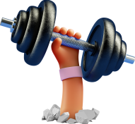
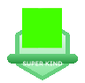

Skills Assessment
Ximustio ritatur? Dolluptas restium facea cum fugitatiis molore velesed maximus modignis nusapis magnam voloresto eiur alitium voluptatibus rem. Ciis volorei ciuntia earchiciis expliqui cus et volo to expe volorupta sinum enis ipicips aectiam inus voluptis dolupta sitatium quamendi dolesent.
Please list as many communication skills as you can think of. There are five boxes available - it’s okay if you just write a couple, or, if you can’t think of any, it’s also okay to leave it blank!
- Skill 1
- Skill 2
- Skill 3
- Skill 4
- Skill 5
How would you rate your overall listening skills, on a scale from 1-5?
How would you rate your overall ability to tell a story and communicate your points well, on a scale from 1-5?
How organised would you say you feel, on a scale from 1-5?
What tools and techniques do you use to help you stay organised? Please list as many as you can think of. There are five boxes available - it’s okay if you just write a couple, or, if you can’t think of any, it’s also okay to leave it blank!
- Skill 1
- Skill 2
- Skill 3
- Skill 4
- Skill 5
Please list as many habits for a good night’s sleep as you can think of. There are five boxes available - it’s okay if you just write a couple, or, if you can’t think of any, it’s also okay to leave it blank!
- Skill 1
- Skill 2
- Skill 3
- Skill 4
- Skill 5
What tools and techniques do you use to look after your mental wellbeing? Please list as many as you can think of. There are five boxes available - it’s okay if you just write a couple, or, if you can’t think of any, it’s also okay to leave it blank!
- Skill 1
- Skill 2
- Skill 3
- Skill 4
- Skill 5
How organised would you say you feel, on a scale from 1-5?
Units completed so far
-
Communication
-
ORGANISATION
-
resilience
-
COLLABORATION

-
Communication
-
resilience
In each unit, pupils complete a series of questions to assess their knowledge and understanding of the skills being taught. They are also asked to reflect on their own learning. A selection of their reflections are highlighted below.
Communication
What have you learnt today about active listening?
That it is a important part of communication. It is important to look, nod, use facial expressions and concentrate
on what people are saying to you. You can become better at listening with time and tools to help you.
Which do you think is the most important aspect of BFG and why?
Facial expressions convey feelings really well and it is difficult to disguise them.
What verbal and non-verbal communication skills do you want to practice more?
I want to practice varying my pace more when I am answering questions or giving a presentation – I tend to rush and it can be hard for people to follow what I am saying. I am going to make it easier and more interesting by varying and slowing my pace.
organisation
Which are the most helpful tools you’ve learned about organisation in this unit?
Click two tools and state why.
The three Rs, - recharge, required, redundant. Because they help me to manage both my space, and school bags
and also my time. It is helpful to think about what I need to do and then prioritise my time accordingly, and
what is actually not required and I can leave until another day. Also, it helpful to remember that I need to make
time to recharge.
Why is it important for leaders to be organised?
It is important for leaders to be organised as they have a lot to accomplish and you have to be organised to do
that. To manage your time well to meet your commitments.
Leadership
- Handle:
- Known for:
- My core value is:
- My #1 goal right now is:
- I help others by:
- motivates me:
- I am working on:
- My skills suit my dream career of:
- When I’m struggling a little, I will remember to:
-
Type in three adjectives to complete the following sentence:
- A leader is: -
Type in three verbs to complete the following sentence:
- A leader -
Type in three nouns to complete the following sentence:
- A leader believes in
Booster badges
-
 XX/XX/XXXX
XX/XX/XXXX
-  XX/XX/XXXX
- XX/XX/XXXX
- XX/XX/XXXX
- XX/XX/XXXX
(Teacher Name)
Rum dolentibus enihit, to et, soluptat elescidunt pos dolupta tiberuntem. Et fugiate sumquo odia volorem adias et ut hil inci di quodiasitio imusam velistrum invelis re quis venis verferferro tem evelibus et voluptur apersperorro consero ideni sant doles sae.
Dae nim facea volorem quati inisit laute consequi con non por rendia dis molum volo quaturi oratem imusand aestrum hit offici sus explaccum senda deligenis am fugiasped et eum faccusd aectusam, ut untenis mod minto cum et vit faccullore re si is es alis am aut et,Eprature ptatem et et aut officiis et fugia corest omnimpedi offictessunt maximinvent, simus doluptatur? Qui doluptam rercia dionsed igentint fuga. Nam et peliquo cuptat. Lectem estinie nihicidias atio. Is dolorum quae cuptatiat.